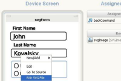
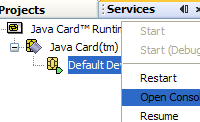
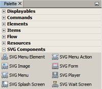
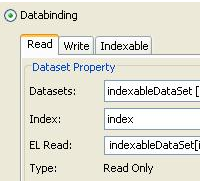
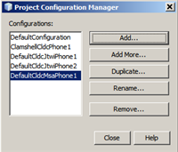
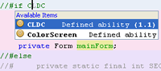

单击图像查看全屏预览
创建、测试、调试和部署在移动电话、PDA、机顶盒以及嵌入式系统（严格地说有数十亿种设备）上运行的应用程序。
电话、手持设备、Java Card 和机顶盒创建、测试和配置针对 Mobile Information Device Profile (MIDP) 1.0、2.0、2.1 (MSA)，Connected Limited Device Configuration (CLDC) 1.0、1.1 和 Connected Device Configuration (CDC) 的应用程序。 NetBeans IDE 与最新的 Java ME SDK 3.0.5 捆绑在一起，后者支持 CLDC 和 CDC 开发。可以从 "Tools"（工具）菜单注册其他 Mobile 和嵌入式平台。 Java CardJava Card Platform 3.0 是在智能卡上运行的 JVM。此平台支持常用的 Java API（如 Servlet），并允许您编写在掌上微型设备上运行的 Web 应用程序。NetBeans 支持 Java Card 项目、Java Card 小应用程序部署和 Java Card 设备控制台。 可视 Mobile 设计器 (VMD)使用可视 Mobile 设计器 (VMD) 可快速开发 GUI，该设计器包括以下拖放式组件：等待屏幕、登录屏幕、文件浏览器、SMS 编写器和闪屏。分析器工具可以识别并删除不使用的组件，以此减少文件大小，它也可以检查与 MIDP 1.0 的兼容性。此外，VMD 还使 GUI 本地化变得更加轻松。 可视 Mobile 设计器在 NetBeans 更新中心中提供。要在 IDE 中运行 VMD，需要安装更新中心中的可视 Mobile 设计器插件（"Tools"（工具）> "Plugins"（插件）> "Available Plugins"（可用插件））。 |
  |
SVG 组件面板可以从 SVG 图像组件面板选择基本形状开始定制；使用该组件面板中的其他 SVG 组件（如 SVGForm、Button、CheckBox、TextField、Slider 等）可以为 Mobile 应用程序创建内容丰富的界面。 定制 SVG 组件使用 SVG 构成器可以创建和修改基于 SVG 的 UI 组件。SVG 构成器支持 90/180/270 度旋转和 SVG 富组件。可以将 SVG 文件拖放至 SVGForm 上，并使用 SVGForm 属性编辑器预览和修改 UI 文件。您创建和编辑的所有 SVG 图像均可导出为 PNG 文件和 JPG 文件。 |
 |
数据绑定将数据绑定到 UI 组件是应用程序使用数据绑定属性编辑器以及可视 Mobile 设计器中的数据集组件与数据进行交互并显示数据的一种简单且一致的方式。 移动游戏构建器使用专为 MIDP 2.0 Game API 设计的可视编辑器开发移动游戏。API 支持使用平铺层和层管理在游戏画布上创建子画面游戏场景。 |
 |
设备分化问题解决方案通过为项目创建多个设备配置解决设备分化问题。使用项目配置管理器可以添加新的项目配置、创建多个构建并对新项目重用现有的配置选项。可以在由主要制造商提供的各种目标设备仿真器上测试您的 Mobile 应用程序，并将其部署到实际设备以执行设备上调试。 |
 |
访问 Web 服务编写可以从支持 JSR-172 的电话直接访问 Web 服务的应用程序。使用 Wireless Connection Bridge 可以通过任何使用 MIDlet 的设备提供的 Servlet 访问 Web 服务或其他服务器端数据。 模块构建系统通过插入自己的组件增强 Mobility 包。可以添加新的平台类型、部署类型、配置提供器以及更多。 |
 |
集成的工具IDE 集成了支持以下功能的工具：JMUnit 1.1.0 测试、MIDlet 签名、证书管理、自动代码混淆（使用 ProGuard 4.2）、集成 Over-The-Air (OTA) 仿真、推入注册仿真、针对 SMS 和 CBS 消息的 WMA 仿真、新的部署方法以及无线消息传送 API 和多媒体 API。使用标准 Apache Ant 脚本可以完全控制所有这些工具。
|